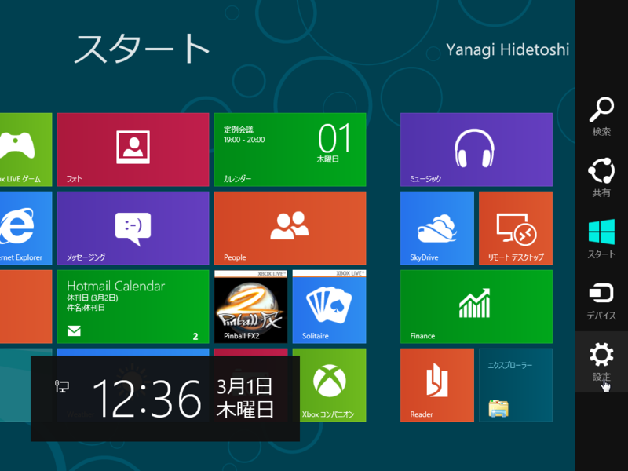

Windows 8 のホットキー
公開日：

Windows 8は悪くないと思ったけれど、今のデザインでは若干マウスの移動量が多いように感じる。なので、ショートカットを積極的に覚えておくとよさげ。Windows 7とは若干変更になったコンビネーションもあるようだ。
| キーコンビネーション | 効果 |
|---|---|
| ［Windows］ | メトロデスクトップ ⇔ クラシックデスクトップの切り替え |
| ［Windows］＋［O］ | デバイスの向きを固定 |
| ［Windows］＋［PrintScreen］ | カレントスクリーンのスクリーンショットを撮ってピクチャーフォルダに保存 |
| ［Windows］＋［,］ | デスクトップを一時的に表示（AeroPeekに相当） |
| ［Windows］＋［V］ | 通知トーストを順に切り替え |
| ［Windows］＋［Shift］＋［V］ | ［Windows］＋［V］キーの逆順 |
| ［Windows］＋［Enter］ | ナレーターの起動 |
| ［Windows］＋［PgUp］ | メトロデスクトップを表示するデスクトップの切り替え |
| ［Windows］＋［PgDown］ | メトロデスクトップを表示するデスクトップの切り替え |
| ［Windows］＋［.］ | メトロスタイルアプリケーションをデスクトップ右端にスナップ |
| ［Windows］＋［Shift］＋［.］ | アプリケーションをデスクトップ左端にスナップ |
| ［Windows］＋［C］ | チャームバーの表示 |
| ［Windows］＋［I］ | ［設定］チャームを表示 |
| ［Windows］＋［K］ | ［デバイス］チャームの表示 |
| ［Windows］＋［H］ | ［共有］チャームの表示 |
| ［Windows］＋［P］ | モニター設定の表示 |
| ［Windows］＋［Q］ | アプリの検索 |
| ［Windows］＋［W］ | システム設定の検索 |
| ［Windows］＋［F］ | ファイルシステムの検索 |
| ［Windows］＋［Tab］ | スイッチリストを表示してアプリを切り替え |
| ［Windows］＋［Shift］＋［Tab］ | ［Windows］＋［Tab］キーの逆順 |
| ［Windows］＋［Ctrl］＋［Tab］ | スナップの内容をアプリ切り替えに含める |
| ［Windows］＋［Z］ | アプリバーの表示 |
| ［Windows］＋［D］ | デスクトップを表示 |
| ［Windows］＋［M］ | すべてのアプリケーションを最小化 |
| ［Windows］＋［Space］ | 入力言語とキーボードレイアウトの切り替え |
| ［Windows］＋［/］ | IMEで再変換 |
| ［Windows］＋［T］ | タスクバーで開いているウィンドウをプレビュー |
| ［Windows］＋［E］ | エクスプローラーを表示 |
| ［Windows］＋［Psuse］ | プロパティの表示 |
| ［Windows］＋［J］ | フォーカスのあるアプリとスナップしたアプリを取り替え |
| ［Windows］＋［L］ | スクリーンをロック |
| ［Windows］＋［X］ | クイックランチメニューの表示 |
Windows 8のすべてをまだ把握しきれていない上、検証もまだなので、一部誤りがあると思う。適宜修正するつもり。